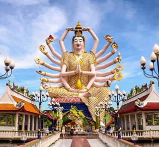
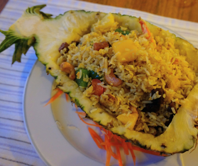
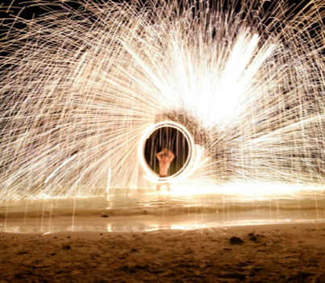

Here has been developed with even more and more memorable activities



At here, you can go to as many beaches as you want, attend the water sports like banana boat, snorkeling, scuba diving, and kayaking. There are also many markets and places where you can shop for souvenirs and enjoy the local foods with seascapes, and temples to visit and get immersed in the Thailand culture. Bet this island will become your favorite place to go in summer!